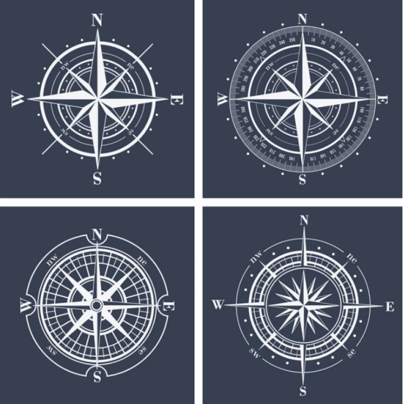

La Rosa de los Vientos: qué es y qué significa

La Rosa de los Vientos es un símbolo con forma circular que marca el rumbo en el que se divide el horizonte.
Determina los diferentes puntos cardinales:
Norte - Sur - Este - Oeste
Este símbolo tiene su creación atribuida al mallorquín Ramon Llul y lo puedes encontrar en mapas, brújulas y cartas náuticas. Se presenta por 32 rombos ligeramente deformados, unidos por el extremo.
La idea de crear un Museo Naval en Madrid se remonta al año 1842, después de que se fundara un museo de Marina en la Población de San Carlos (Cádiz), y fue en noviembre de 1843, en nombre de la reina Isabel II, cuando se inauguró el museo en el Palacio de los Consejos de la calle Mayor.
Uno de sus principales usos, es para marcar el rumbo del viento. Los navegates definieron la dirección por los diferentes nombres que tiene el viento y por los puntos donde se encuentran o solapan.
Entender cómo se interpreta será fundamental para hacer un buen uso de la carta náutica. Recuerda que para obtener tu titulación náutica, necesitarás saber usar ambas herramientas.
El supuesto origen es el siguiente:
Existen imágenes geométricas del siglo XIII encontradas en Venecia, Mallorca y Génova, que aparecieron en los libros de instrucciones de la gente de mar. En estos libros se anotaba información de interés, como la distancia entre algunos puertos o rumbos a seguir para llegar hasta ellos.
La primera rosa de los vientos que se encuentra documentada en una carta de navegación es la del navegantes portugúes Pedro Reinel, en el año 1504. Esta tosa incluía una flor de lís marcando el norte, en su parte superior. En años posteriores la rosa fue apareciendo en otras cartas náuticas, extendiéndose así su uso.
Se dice que el origen del nombre proviene de la similitud con la forma de una imagen de una rosa.